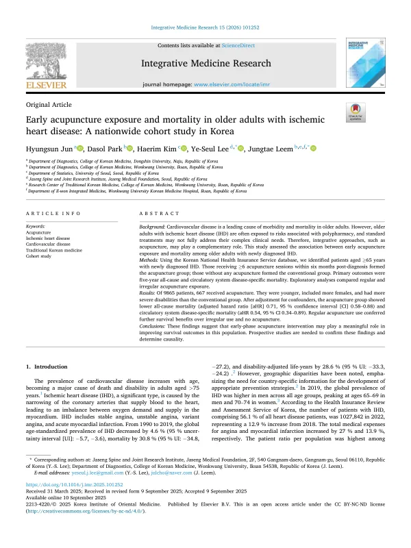

Early acupuncture exposure and mortality in older adults with ischemic heart disease: A nationwide cohort study in Korea
Jun H, Park D, Kim H, Lee YS, Leem J
Integrative Medicine Research 15(2):101252

첫 장 · 오픈액세스First page · open access
논문 소개Summary
심혈관질환은 나이가 들수록 늘어나지만, 정작 노인은 심혈관 임상시험에서 빠지는 일이 많습니다. 동반질환이 많고 신장·간 기능이 떨어져 있으며 평가에 시간이 더 걸리기 때문입니다. 그래서 표준치료의 근거가 정작 그 병을 가장 많이 앓는 사람들에게서 만들어지지 않는 공백이 생깁니다. 이 연구는 그 공백을 건강보험 자료로 메우려 했습니다.
국민건강보험공단 표본코호트(전 국민의 2%, 100만 명)에서 2007년 1월부터 2014년 6월 사이에 허혈성심장질환(ICD-10 I20–I25)을 처음 진단받은 65세 이상 9,865명을 찾았습니다. 2002~2006년을 세척기간으로 두어 이전에 진단받았거나 이미 침을 맞고 있던 사람을 걸러냈습니다. 진단 후 6개월 안에 침을 6회 이상 받은 667명을 침 치료군, 한 번도 받지 않은 9,198명을 대조군으로 하고, 6개월이 지난 시점부터 5년간 사망을 추적했습니다.
1,000인년당 전체 사망은 침 치료군 34.29건, 대조군 59.46건이었고 순환기계 질환으로 인한 사망은 6.15건과 16.36건이었습니다. 나이·성별·소득·거주지·장애 정도·동반질환을 보정한 뒤에도 전체 사망의 위험비는 0.71(95% 신뢰구간 0.58–0.88), 순환기계 사망은 0.54(0.34–0.89)였습니다. 6개월에 걸쳐 고르게 나눠 맞은 규칙적 치료군이 0.66(0.49–0.89)으로 가장 낮았습니다. 눈여겨볼 점은 침을 맞은 쪽이 동반질환 점수도, 양방 외래 방문 횟수도 오히려 더 많았다는 것입니다. 더 아픈 사람이 침을 맞으러 갔는데도 사망은 낮았습니다.
한계는 분명합니다. 청구자료라서 어느 혈자리에 어떤 방식으로 놓았는지 알 수 없고, 처음 6개월의 치료만으로 5년을 예측하는 방식이라 그 뒤의 변화는 반영되지 않습니다. 흡연·음주·체질량지수는 자료 제약으로 주 모형에 넣지 못했습니다(따로 넣어 본 분석에서는 경향이 같았습니다). 관찰연구이므로 인과관계를 말할 수 없습니다. 그럼에도 진단 직후가 개입의 창일 수 있다는 가설을 노인 허혈성심장질환에서 처음으로 대규모 자료로 제시했습니다.
Cardiovascular disease becomes more common with age, yet older adults are frequently excluded from cardiovascular trials — they carry more comorbidities, have reduced renal and hepatic function, and take longer to assess. The result is a gap in which the evidence for standard care is not generated in the very people who most often have the disease. This study set out to fill that gap using national claims data.
From the Korean National Health Insurance Service sample cohort (2% of the population, one million people), we identified 9,865 adults aged 65 and over newly diagnosed with ischemic heart disease (ICD-10 I20–I25) between January 2007 and June 2014. A washout window covering 2002–2006 excluded those already diagnosed or already receiving acupuncture. The 667 patients who received six or more acupuncture sessions within six months of diagnosis formed the acupuncture group and the 9,198 who received none formed the conventional group; mortality was then tracked for five years starting at the six-month mark.
All-cause mortality was 34.29 per 1,000 person-years in the acupuncture group versus 59.46 in the conventional group, and circulatory-system mortality was 6.15 versus 16.36. After adjustment for age, sex, income, residence, disability grade and comorbidity, the adjusted hazard ratio was 0.71 (95% CI 0.58–0.88) for all-cause mortality and 0.54 (0.34–0.89) for circulatory-system mortality. Patients whose sessions were spread regularly across the six months fared best (aHR 0.66, 0.49–0.89). Notably, the acupuncture group had higher comorbidity scores and more conventional outpatient visits than the controls — the sicker patients were the ones seeking acupuncture, and their mortality was still lower.
The limitations are clear. Claims data cannot show which acupoints or techniques were used; assessing exposure only in the first six months to predict five-year outcomes cannot capture later changes in treatment; and smoking, alcohol use and body mass index could not be entered into the primary model, though a separate analysis including them showed the same direction. As an observational study it cannot establish causality. Even so, it is the first large-scale dataset to suggest that the period immediately after diagnosis may be a window for intervention in older adults with ischemic heart disease.
인용Cite
Jun H, Park D, Kim H, Lee YS, Leem J. Early acupuncture exposure and mortality in older adults with ischemic heart disease: A nationwide cohort study in Korea. Integrative Medicine Research. 2026;15(2):101252. doi:10.1016/j.imr.2025.101252